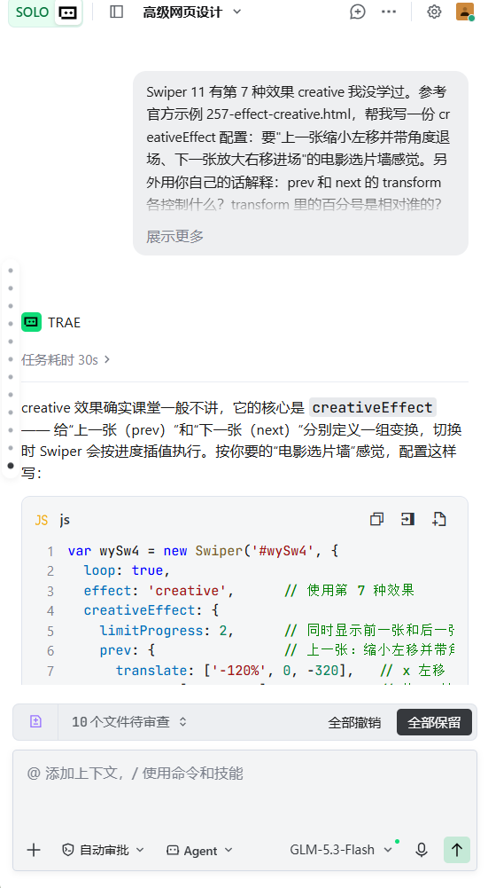

creative 效果用 creativeEffect 配置，prev 控制上一张、next 控制下一张，translate 是 [x, y, z] 位移（百分号相对 swiper 容器宽高，第三个值 z 是 translateZ，负值后退变小、正值前进变大），rotate 第三值绕 z 轴转：
creativeEffect: {
limitProgress: 2,
prev: { translate: ['-120%', 0, -320], rotate: [0, 0, -16] },
next: { translate: ['115%', 0, 150], rotate: [0, 0, 12] },
}

真实对话截图 ③（Trae · GLM-5.3-Flash）